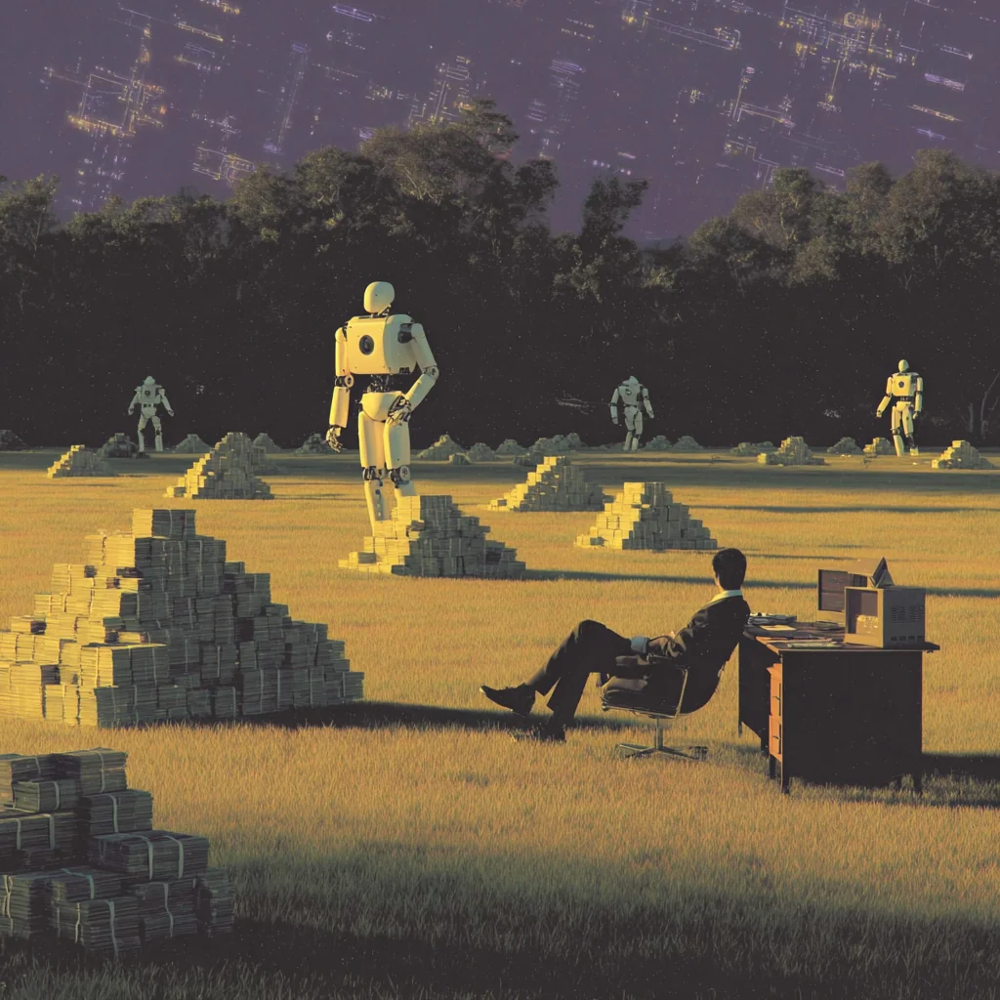

We build AI automations for lean teams who want to grow without the grunt work.
From admin tasks to client workflows, we automate the repetitive stuff that eats your time so you can scale faster without hiring more people.

What We Offer
Custom AI Automations for Growing Teams. We design automation systems that handle repetitive admin work, streamline operations, and help your business scale without adding headcount. Whether you're drowning in candidate data, managing endless onboarding steps, or buried in manual follow-ups, we build workflows that fix it. Save 20+ hours per week. No new tools to learn, we work with your existing stack. Fully managed delivery and ongoing support. Built for speed, scale, and clean results.
What to Expect
Tell Us What's Wasting Time
Share the admin tasks, workflows, or bottlenecks slowing your team down.
We Design the Automation
You get a custom AI-powered workflow built around your exact needs, using tools you already rely on.
Launch and Scale
We deploy, test, and maintain your automation so you can focus on growth while the busywork runs in the background.
Important Numbers
Hours of work saved per week
20+
Less admin, more output.
Tools to learn
0
We integrate directly into your existing systems.
Custom-built
100%
Every workflow is designed for your exact use case.
Why Automate
When your team is buried in repetitive admin, you're not just wasting time. You're losing revenue, slowing down, and limiting your ability to grow. Automation solves this.
- Free up 20+ hours per week.
- Cut down errors and delays.
- Respond faster to clients and candidates.
- Scale operations without hiring more staff.
We build custom AI workflows that pull your business out of the grind and let your team focus on the work that drives growth.